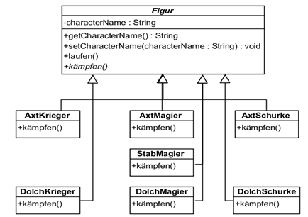

Übersicht / Implementieren: Vererbung / Interfaces · Niveau 3
V3: Interfaces für flexiblen Code
Eigene Interfaces, flexibler Code
Lernziele
Auftrag
Ein Programm schreiben, das die Lernziele aufzeigt (Arbeit mit KI möglich).
Idee 1: Portfolio von Aktien
Die Klasse Portfolio kennt nur das Interface StockExchange und bekommt eine konkrete Börse als Parameter (Konstruktor oder Methode). Mindestens zwei Börsenplätze mit unterschiedlichen Aktien und Preisen, dazu ein Benutzer-Menü für Portfoliowert und Aktienkurs.
classDiagram
direction LR
class Portfolio {
-List~Aktie~ aktien
+Portfolio(StockExchange boerse)
+getWert() double
}
class StockExchange {
<<interface>>
+getPreis(aktie) double
}
class Aktie {
-String name
}
Portfolio "1" o-- "0..*" Aktie
Portfolio --> StockExchange
StockExchange <|.. Zuerich
StockExchange <|.. London
StockExchange <|.. NewYorkIdee 2: Rabattberechnung mit Strategy Pattern
Die Klasse ShoppingCart arbeitet nur mit einem Rabatt-Interface. Strategien: kein Rabatt, Studentenrabatt, Black Friday, Treuerabatt. Die App braucht eine Benutzerschnittstelle.
classDiagram
direction LR
class ShoppingCart {
-Rabatt rabatt
+setRabatt(Rabatt r)
+getTotal() double
}
class Rabatt {
<<interface>>
+berechne(betrag) double
}
ShoppingCart --> Rabatt
Rabatt <|.. KeinRabatt
Rabatt <|.. Studentenrabatt
Rabatt <|.. BlackFriday
Rabatt <|.. TreuerabattIdee 3: Verhalten als Interface auslagern
Das Waffen-Verhalten der Figuren-Hierarchie wird in ein Interface WaffenVerhalten ausgelagert. Die Superklasse Figur hat es als Attribut, jede konkrete Figur bekommt ihr Verhalten. Eine Menu-Klasse lässt Figuren und Waffen-Verhalten wählen und listet alles auf.
